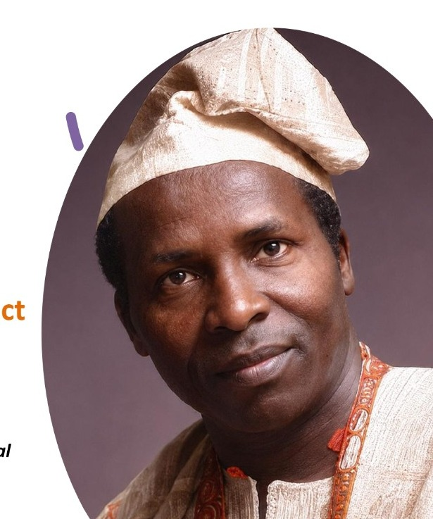

Identify Scholars
We reach out and identify bright and deserving students with potential.

Founded in memory of Alhaji Chief Lateef Ajibade Salami, LASAL Foundation promotes social mobility through scholarships, mentorship, and education support across Nigeria.
LASAL is the acronym for Lateef Ajibade Salami. The Foundation was founded and endowed by Mrs. Funmi Oyetunji (Board Chair) in remembrance of our father and our beloved brothers, Mr. Tunde Salami (1962–2013) and Mr. Segun Salami (1964–2014).
Alhaji Chief Lateef Ajibade Salami (7 September 1935 – 1 February 2000) was born in Osogbo, Osun State, to Adeleke and Raliat Salami. He traded along the West Coast of Africa, settled in Ghana, and later returned to Ibadan. He worked with the Cocoa Board as a secretary before joining the Central Bank of Nigeria in 1959, qualifying through the London Institute of Bankers’ examinations. After retiring in 1985, he established the LASAL Hotel on International Airport Road, growing it from seven to forty-five rooms.

OUR MISSION: To promote social mobility through financial help and counsel by granting scholarships to and mentoring indigent students in Nigeria.
OUR VISION: To be regarded as an influential organisation, promoting and contributing to social mobility and the alleviation of poverty through education in Nigeria.
ABOUT US: THE LATEEF AJIBADE SALAMI (LASAL) FOUNDATION was founded in 2015 in memory of our father, Alhaji Chief Lateef Ajibade Salami and our departed brothers, Mr. Tunde Salami and Mr. Segun Salami. LASAL Foundation was incorporated in Ikeja, Lagos State, Nigeria with Registration Number 80023. It was registered on 12th August 2015. We promote upward social mobility through educational scholarships and bursaries to indigent but brilliant students in Nigeria.
Social mobility is the movement of individuals or families between social strata—for example, a child of labourers becoming a professor. Opportunity for upward social mobility is declining in Nigeria, in part because of insufficient government funding for education.
LASAL Foundation intervenes by providing aid to indigent students on the basis of merit, to alleviate poverty through education and restore hope that hard work and learning can change life outcomes for families and communities.
Early scholars who helped establish our scholarship programme.
| Name | Age | Institution | Course | Level | State of origin |
|---|---|---|---|---|---|
| Comfort Justin Idiong | 24 | Yaba College of Technology | Banking and Finance | ND1 | Akwa Ibom |
| Oyeleye Abayomi David | 21 | Ladoke Akintola University of Technology | Civil Engineering | 200 level | Osun |
| Gbonjubola Yusuf | 22 | University of Ibadan | Physiotherapy | 200 level | Osun |
| Okunola Afeez | 26 | University of Ibadan | Dentistry | 300 level | Osun |
We focus on employable fields of study to improve success rate of our support structure.
Our scholars build skills for employability, career mobility, and leadership—supported through university, mentorship, and graduate pathways.
How LASAL walks with each scholar from identification through alumni giving back.
We reach out and identify bright and deserving students with potential.
Scholarship, accommodation, school supplies, and resources they need to succeed.
Guidance through mentorship, values formation, and encouragement.
Scholars grow in confidence, excel academically, and lead among peers.
They achieve their dreams and graduate with pride, ready for the next chapter.
Support for transition to employment or starting and growing a business.
Alumni inspire and help the next generation of LASAL scholars.

Our core values provide the bases for the Foundation's mission. They shape the way we pursue our vision and underpin the way we interact with our stakeholders.
We aim to treat people with dignity and respect always adhering to the highest personal and professional standards in the pursuit of efficiency.
Our policies, procedures and processes conform to the highest standards of governance and transparency and will stand the test of probity.
We treat everyone with empathy, compassion and understanding as we ourselves would wish to be treated.
We actively seek creative excellence to achieve change for the better.
For the Board of Trustees and Advisory Board:
Rising educational costs and increasing demand for scholarships require a larger response. NELFUND is not scratching the surface.
Guided by experienced educators, nonprofit leaders, and industry executives.

Chairperson
A distinguished Nigerian finance professional, chartered accountant, and corporate governance expert with over 40 years of experience across accounting, banking, real estate, and corporate leadership. She is Managing Director of Abitos Financial Services Limited and Chairman of Prestige Assurance Plc, having served on the boards of several leading organizations and contributed significantly to corporate governance and sustainable business growth.
Trustee
Oversees scholar selection criteria, university partnerships, and academic tracking.
Trustee
Supports governance, stakeholder engagement, and the Foundation’s commitment to transparency and impact.
Programs Officer
Manages scholarship applications and awards, coordinates beneficiaries, monitors students’ academic progress, maintains programme records, and ensures the effective implementation of scholarship programmes.
Senior advisors who guide the Foundation’s direction and community standing.
Advisory Board
Provides counsel on community engagement, culture, and the Foundation’s public mission.
Advisory Board
Advises on education, mentorship, and long-term strategy for scholar support.